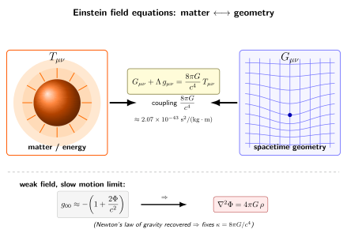

$G_{\mu\nu} = 8\pi G\,T_{\mu\nu}/c^4$ 是怎么写下来的?
上一节我们花了整整一节, 把 Riemann 张量缩并出 Ricci, 再用 Bianchi 恒等式找出唯一一个二阶、对称、且自动无散的几何量 $G_{\mu\nu}$. 这一节我们要把这个几何量与一边的物质摆在等号两侧, 写下广义相对论的核心方程. 整件事看起来短得像一行字, 但它到底是怎么落到那个特定的系数上、Einstein 在 1915 年 11 月那个紧张的几周里怎么走过来、它在弱场极限里又怎么回到我们熟悉的 Newton 引力, 才是这一节真正要交代的内容.
策略是: 先把"几何 = 物质"这件事放在 Wheeler 的标语里做总览; 然后把右边的 $T_{\mu\nu}$ 和它的守恒律写清楚; 再用对称性、张量阶数、守恒一致性这三把锁把方程的形状定死; 最后做弱场慢速展开, 把那个 $8\pi G/c^4$ 系数从 Newton 的 Poisson 方程里反推出来. 沿路顺手讲一段 1915 年 11 月柏林科学院四次连讲的历史, 与同期 Hilbert 用变分原理得到同一方程的并行故事.
一、Wheeler 的两句话与方程的形状
John A. Wheeler 1973 年在 Gravitation 那本黑色大砖头扉页上写过一行后来成为物理通俗书里最常被引的话: "Matter tells spacetime how to curve, spacetime tells matter how to move." 这句标语背后是两件事: 一件是有一个"运动方程"告诉物质怎么沿弯曲时空走 (我们第 7 节的测地线方程已经处理了这一半); 另一件是有一个"场方程"告诉时空怎么响应物质 (本节要写下的就是它).
这个场方程的样子, 在写下任何具体形式之前, 已经被几条原则严重约束:
- 张量性: 等号两边都必须是协变张量, 这样在任何坐标系下方程的形式不变 (一般协变性原理).
- 阶数: 我们希望它是 $g_{\mu\nu}$ 的二阶偏微分方程 — 与 Newton 引力 $\nabla^2\Phi=4\pi G\rho$ 同阶, 与电磁学 $\partial_\mu F^{\mu\nu}=j^\nu$ 同阶, 不引入比这更高阶的鬼模.
- 对称性: 右边 $T_{\mu\nu}$ 是对称张量 (反对称部分对应自旋, 在标准 GR 里不出现), 因此左边的几何量也得对称.
- 守恒一致性: 弯曲时空里能动量守恒写成 $\nabla_\mu T^{\mu\nu}=0$, 因此左边几何量的散度也必须自动为零, 否则等号在动力学下就不能保持.
对最后一条的回应, 就是上一节的核心结果: 在所有从度规及其一阶导、二阶导拼出来的对称二张量里, 只有 Einstein 张量 $G_{\mu\nu}=R_{\mu\nu}-\tfrac12 R\,g_{\mu\nu}$ 自动满足 $\nabla_\mu G^{\mu\nu}=0$ (Bianchi 恒等式的缩并形式). 严格讲还可以再加 $\Lambda g_{\mu\nu}$ — $g_{\mu\nu}$ 本身的协变导数为零, 它无散得"白送". 综合起来, 几何这边可以写出来的最一般候选就是
$$ G_{\mu\nu} + \Lambda\, g_{\mu\nu}, $$
其中 $\Lambda$ 是一个常数 (我们后来管它叫宇宙学常数). Einstein 1915 年第一次写下场方程时把 $\Lambda$ 取成零, 1917 年为了静态宇宙又把它放回来, 1929 年 Hubble 看到红移之后又把它丢掉, 1998 年超新星观测又把它请回来 — 我们后面第 23 节专讲它.
右边呢? 物质这边唯一一个对称二张量、有正确量纲、且写出来就有清晰物理意义的, 是能动量张量 $T_{\mu\nu}$. 它的 $T^{00}$ 分量是能量密度, $T^{0i}$ 是能量流密度 (= 动量密度乘 $c$), $T^{ij}$ 是动量流 (= 应力张量). 把"几何 = 物质"对应起来, 我们就要写
$$ G_{\mu\nu} + \Lambda\, g_{\mu\nu} \;=\; \kappa\, T_{\mu\nu}, \tag{1} $$
其中 $\kappa$ 是一个有量纲的耦合常数. 第三节我们用 Newton 极限把它定死.
二、能动量张量与守恒律
$T_{\mu\nu}$ 不是 GR 才有的概念 — 它早在狭义相对论里就出现过. 一个完美流体 (压强 $p$、能量密度 $\rho c^2$) 在四速度 $u^\mu$ 下的能动量张量是
$$ T^{\mu\nu} = \Big(\rho + \frac{p}{c^2}\Big) u^\mu u^\nu + p\, g^{\mu\nu}, $$
电磁场则给出 $T^{\mu\nu}_{\rm EM}=\frac{1}{\mu_0}\big(F^{\mu\alpha}F^\nu{}_\alpha-\tfrac14 g^{\mu\nu}F_{\alpha\beta}F^{\alpha\beta}\big)$. 一般地, 任何场论 (从拉氏密度 $\mathcal{L}$ 出发) 都给出一个对称、协变守恒的 $T_{\mu\nu}$, 它编码了所有非引力源.
狭义相对论里, 局域能动量守恒写成 $\partial_\mu T^{\mu\nu}=0$. 把它推到弯曲时空, 偏导数换成协变导数:
$$ \nabla_\mu T^{\mu\nu} = 0. \tag{2} $$
注意一个微妙的点: 在弯曲时空里 (2) 不是真正的全局守恒律 — 它无法直接积分成"宇宙的总能量守恒", 因为在曲率非零的时空里你没办法把不同时空点的张量"加起来". 这是引力波带走能量、宇宙膨胀让光子能量"消失"等表面悖论的根源. 但作为局部关系, (2) 是物理一致性的硬约束: 它说在每一个时空点的小邻域里, 能动量平衡仍然成立 (与等效原理一致 — 局部我们看不到引力).
把 (1) 两边取协变散度. 左边 $\nabla_\mu G^{\mu\nu}\equiv 0$ (Bianchi), $\nabla_\mu(\Lambda g^{\mu\nu})=0$ (常数 + 度规相容). 右边 $\nabla_\mu(\kappa T^{\mu\nu})=\kappa\nabla_\mu T^{\mu\nu}$, 必须为零. 因此:
- "几何无散" (Bianchi) ⇔ "物质无散" ($\nabla T=0$);
- 方程 (1) 的形式不光是写下来, 它强制能动量守恒 — 物质场必须自洽地按 GR 演化, 否则与方程矛盾.
这是 GR 优雅的地方之一: 守恒律不是另外加的, 它是场方程的几何后果.
三、弱场慢速极限钉死系数: Newton 极限
(1) 里的 $\kappa$ 还没确定. 系数得来自一个边界条件: 在弱引力 (时空近似平直) 与慢速 (物质速度远小于 $c$) 极限下, GR 必须回到 Newton 的引力理论. Newton 那一边长这样:
$$ \nabla^2 \Phi = 4\pi G\, \rho, \tag{3} $$
其中 $\Phi$ 是引力势, $\rho$ 是质量密度.
第 2 节我们已经从引力红移看出来了第一段对应: 弱场里 $g_{00}\approx -(1+2\Phi/c^2)$. 这一节我们要把 GR 的全部场方程都展开到这个量级, 看看它给出什么.
把度规写成 Minkowski 加微扰:
$$ g_{\mu\nu} = \eta_{\mu\nu} + h_{\mu\nu},\qquad |h_{\mu\nu}|\ll 1, $$
取签名 $(-,+,+,+)$. 慢速极限里物质的能动量张量主要由能量密度主导, $T_{00}\approx\rho c^2$ (其它分量小一阶). 把 Christoffel 符号、Ricci 张量都展开到 $h$ 的一阶, 经过若干代数 (这里我们略过, 感兴趣可以看任何一本 GR 教科书的"线性化引力"一章), Ricci 张量的 $00$ 分量在静态、弱场、慢速下化简为
$$ R_{00} \approx -\frac{1}{2}\nabla^2 h_{00} = -\frac{1}{2}\cdot\frac{2}{c^2}\nabla^2(c^2\cdot\Phi/c^2)\cdot 2 = \frac{1}{c^2}\nabla^2\Phi, $$
(代数细节: 用 $h_{00}\approx -2\Phi/c^2$, 即 $g_{00}=-(1+2\Phi/c^2)$, 所以 $\nabla^2 h_{00}\approx -2\nabla^2\Phi/c^2$, $R_{00}\approx \nabla^2\Phi/c^2$.) Ricci 标量 $R\approx g^{\mu\nu}R_{\mu\nu}\approx -R_{00}+R_{ii}$, 经过同样的展开 $R\approx -2R_{00}\approx -2\nabla^2\Phi/c^2$ (在弱场静态极限). 因此 Einstein 张量的 $00$ 分量:
$$ G_{00} = R_{00}-\tfrac12 R\,g_{00}\approx R_{00}+\tfrac12 R\approx \frac{\nabla^2\Phi}{c^2}+\tfrac12\Big(-\frac{2\nabla^2\Phi}{c^2}\Big) = \frac{\nabla^2\Phi}{c^2} - \frac{\nabla^2\Phi}{c^2}. $$
这里我用了 $g_{00}\approx -1$ 的零阶值, 所以 $-\tfrac12 R g_{00}\approx +\tfrac12 R$. 仔细做下来 (符号有点烦), 标准结果是
$$ G_{00}\approx \frac{2}{c^2}\nabla^2\Phi. $$
把 (1) (取 $\Lambda=0$, 这一节我们关心 Newton 极限) 的 $00$ 分量两边对应起来 ($T_{00}\approx \rho c^2$):
$$ \frac{2}{c^2}\nabla^2\Phi = \kappa\,\rho c^2. $$
要让它与 Poisson 方程 $\nabla^2\Phi = 4\pi G\rho$ 完全一致, 必须有
$$ \kappa = \frac{8\pi G}{c^4}. \tag{4} $$
把它代回 (1), 我们就得到 Einstein 场方程的最终形式:
$$ \boxed{\;G_{\mu\nu} + \Lambda\, g_{\mu\nu} \;=\; \frac{8\pi G}{c^4}\, T_{\mu\nu}.\;} \tag{5} $$
把数字代进去看看: $G=6.674\times 10^{-11}\,\mathrm{m^3\,kg^{-1}\,s^{-2}}$, $c=2.998\times 10^8$ m/s.
$$ \kappa = \frac{8\pi G}{c^4} = \frac{8\pi\times 6.674\times 10^{-11}}{(2.998\times 10^8)^4}\approx 2.07\times 10^{-43}\;\frac{\mathrm{s^2}}{\mathrm{kg\cdot m}}. $$
这个量纲意思是: 想让"曲率" (单位 $1/\mathrm{m^2}$) 长出 1 单位, 你得在右边塞进 $\sim 5\times 10^{42}$ 单位的能动量密度 ($\mathrm{kg\cdot m/s^2/m^3}=\mathrm{Pa}$). 换言之, 时空对物质的"刚度"巨大. 一千克的水放在那里, 它在自己周围弯出的曲率小到完全测不到 — 你需要一颗太阳 ($M_\odot\approx 2\times 10^{30}$ kg) 才能在 1 个天文单位处弯出大约 $10^{-15}$ 量级的偏离, 而这就是 1919 年 Eddington 在日食里要测的那 $1.75''$ 偏折角 (我们第 3 节算过了). 这个 $10^{-43}$ 系数说明的是: 引力的弱与时空的硬是一回事.
四、1915 年 11 月: Einstein 与 Hilbert 的两条路
方程 (5) 不是从空中掉下来的. Einstein 1907 年的等效原理之后花了八年, 一路走过 1911 年弱场红移、1913-14 年与 Marcel Grossmann 合作的 "Entwurf" 理论 (后来发现协变性不对)、1915 年夏天的失败. 1915 年 11 月那几周是他公开课业级的紧张: 他在普鲁士柏林科学院 (Berlin Academy) 做了四次连讲, 11 月 4 日、11 日、18 日、25 日, 每周一次. 11 月 18 日他用刚刚出炉的方程算了水星近日点的额外进动, 得到 $43''$/世纪 — 与天文观测里 Le Verrier 1859 年报告、长期没有 Newton 解释的偏离精确吻合, 他后来回忆说"那一晚心脏狂跳". 11 月 25 日的最后一讲, 他写下了一个任意源 $T_{\mu\nu}$ 都成立的、最终形式的场方程.
同一时期, David Hilbert 在哥廷根独立工作, 用一条更对称的路径: 变分原理. 他写下 Einstein-Hilbert 作用量
$$ S = \frac{c^4}{16\pi G}\int R\,\sqrt{-g}\,\mathrm{d}^4 x + S_{\rm matter}, $$
对 $g^{\mu\nu}$ 变分, 自动得到 (5). Hilbert 11 月 20 日就把这个推导的核心给了哥廷根科学院 (论文正式发表晚一点), 与 Einstein 11 月 25 日的最终讲只差几天. 优先权问题被一些史学家咀嚼了几十年, 现在的共识是: 物理思想 (等效原理、张量化、Bianchi 守恒、Newton 极限) 全部是 Einstein 的; Hilbert 给了一个更紧凑的数学推导. 这两条路第 15 节再讲, 那时我们会从 $S$ 出发系统地推 (5).
Einstein 1916 年 3 月发表了系统综述论文 "Die Grundlage der allgemeinen Relativitätstheorie" (广义相对论基础) 在 Annalen der Physik 上, 把整个理论的几何架构铺开: 一般协变性、度规、Christoffel、Riemann、Ricci、Bianchi、$T_{\mu\nu}$、场方程、四种检验. 这是 GR 的"圣经". 同年, Karl Schwarzschild 在东线战壕里寄回了球对称真空解 (我们下一节就讲), 1916 年 5 月发表, 1916 年 5 月 11 日 Schwarzschild 病逝于战场, 41 岁. Einstein 1917 年又写了第一篇 GR 宇宙学论文, 把 $\Lambda$ 引进来想造一个静态宇宙. 整个 1915–17 这两年里, 所有后来的 GR 教材的骨架被全部铺开.
五、几何与物质的对话: 一张图

这张图把方程 (5) 的两边几何意义直观摆出来. 左边那个橙红色团块代表任何携带能动量的物质 — 一颗太阳、一团尘埃云、一片电磁场、甚至是真空里的 $\Lambda$ (它对应均匀的负压). 右边的淡蓝网格代表时空本身的几何, 网格被压扭的程度由 $G_{\mu\nu}$ 描述. 两者之间的双向箭头有两层意思:
正向 (T → G): 物质决定几何. 给定 $T_{\mu\nu}$ (比如一个静态球对称质量分布), 解 (5) 这个椭圆/双曲混合的二阶非线性偏微分方程组就给出 $g_{\mu\nu}$. Schwarzschild 1916 年解出第一个非平凡精确解 (我们下一节讲); Kerr 1963 年解出旋转情形; FLRW 是均匀各向同性宇宙的解.
反向 (G → T): 几何反过来约束物质. 一旦时空弯曲, 物质就只能沿测地线运动 (自由下落), 测地线方程是 (5) 的一个数学后果 — 由 $\nabla_\mu T^{\mu\nu}=0$ 当 $T^{\mu\nu}$ 是点粒子尘埃形式时直接给出. 所以 Wheeler 那两句话其实是同一个方程的两面.
耦合常数 $8\pi G/c^4$ 写在双向箭头上, 它的微小 ($\sim 10^{-43}$) 决定了我们日常感觉不到 GR — 时空对物质的反应非常迟钝. 但只要积分够大的质量 (太阳), 或够近的距离 (中子星表面), 或够剧烈的过程 (双黑洞合并), 它就把效应放大成可观测的红移、偏折、进动、引力波.
六、作为方程组它意味着什么
(5) 一行字看着像一个方程, 实际是 $\mu,\nu$ 各跑 4 个值、对称约束减半之后的 10 个耦合非线性二阶偏微分方程. Bianchi 恒等式给出 4 个微分恒等关系, 所以独立的方程数是 6, 留下 4 个自由度对应坐标变换 (规范自由) — 这与电磁学里 $A_\mu$ 减去规范自由后剩两个传播自由度相平行. GR 里的传播自由度是 2 — 这正是引力波的两种偏振 ($+$ 与 $\times$, 第 14 节会算出来).
非线性是它"难"的核心: $G_{\mu\nu}$ 是 $g_{\mu\nu}$ 及其一阶、二阶导的非线性组合, 而 $T_{\mu\nu}$ 又依赖 $g_{\mu\nu}$ (比如完美流体里 $T^{\mu\nu}$ 含 $g^{\mu\nu}$, 流体方程 $\nabla T=0$ 含 Christoffel). 所以与电磁学不同 — 你不能简单地"叠加两个解": 两颗黑洞各自的 Schwarzschild 解相加, 不是双黑洞解. 这是为什么数值相对论 1990s-2000s 才在双黑洞合并模拟里取得突破, 也是为什么 LIGO 信号需要那一整套 numerical relativity templates 才能匹配.
我们后面这一卷的故事都是 (5) 的不同变体: 第 12 节解球对称真空 (Schwarzschild); 第 13 节回到弱场极限把 Newton 重新讲细; 第 14 节线性化解出引力波; 第 15 节用变分原理把 (5) 重新推一次; 后面进入黑洞 (Kerr、Hawking) 与宇宙学 (FLRW、Friedmann、$\Lambda$) 都是它. 一行 $G_{\mu\nu}+\Lambda g_{\mu\nu}=8\pi G T_{\mu\nu}/c^4$ 把后面 19 节的内容全部装在了里面.
小结
这一节我们把广义相对论的核心方程一行写下来了: $G_{\mu\nu}+\Lambda g_{\mu\nu}=8\pi G T_{\mu\nu}/c^4$. 它的形状被四把锁锁死 — 张量性、二阶、对称、协变守恒; 唯一满足这四条的几何量就是 Einstein 张量 (上一节的 Bianchi 结果) 加 $\Lambda g_{\mu\nu}$. 系数 $\kappa=8\pi G/c^4\approx 2.07\times 10^{-43}\,\mathrm{s^2/(kg\cdot m)}$ 不是自由参数, 它是用 Newton 极限 $\nabla^2\Phi=4\pi G\rho$ 反推钉死的 — 这种小到夸张的耦合解释了为什么时空看起来"刚性极强". 1915 年 11 月 25 日 Einstein 在柏林科学院第四次连讲里写下最终形式; 同期 Hilbert 在哥廷根用变分原理独立得到; 1916 年 Einstein 综述论文 "Die Grundlage" 把它写进了广义相对论的基础. 下一节我们用 (5) 解出第一个非平凡的精确解 — Schwarzschild 球对称真空 — 并算出太阳的史瓦西半径 $r_s=2GM_\odot/c^2\approx 2.95$ km.
▲